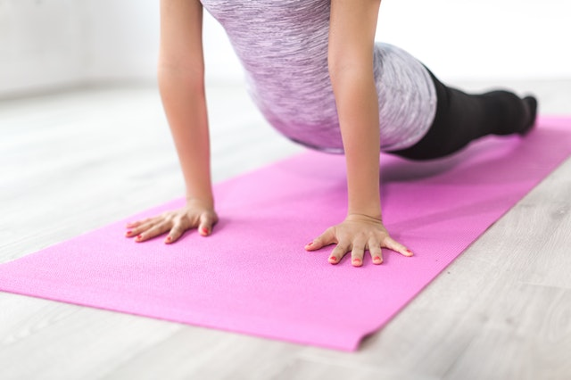

آموزش یوگا
یوگا[۱] (به انگلیسی: Yoga)مجموعهای از فعالیتهای جسمی، ذهنی، و روحانی است که در هند باستان پدید آمدهاست. یوگا همچنین یکی از شش مکتب فلسفی آستیکه (ارتدکس) در فلسفه سنتی هندو است.[۲] ریشه یابی دقیق این ورزش که توسط چه شخصی و دقیقاً چگونه بهوجود آمده کمابیش ناممکن است. چرا که تاریخ شکلگیری یوگا به سالهای بسیار دور برمی گردد.
بیشتر بدانید
